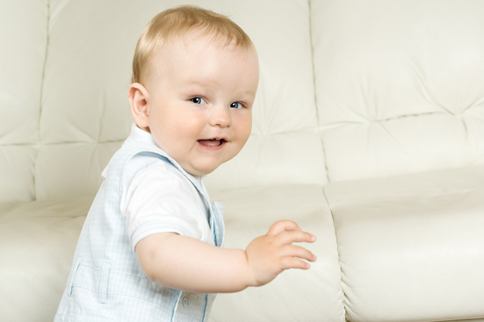

Малыш может стоять и переступать, держась за опору. Появляется "пинцетный захват" - ребенок теперь может брать предметы большим и указательным пальцами. Десны и прорезывающие зубы нуждаются в повышенной жевательной нагрузке.
Ребенку 9 месяцев. Что он может уметь? Быстро ползает в разных направлениях, влезает на четвереньках на подушку, возвышения, лесенку детской горки. Обычно физическое развитие позволяет ребенку в 9 месяцев садиться из положения лежа и ложиться из положения сидя. В этом возрасте малыш часто уже встает на колени, на ноги, держась за опору (поднимается из положения сидя) и даже подпрыгивает, держась за барьер. В 9 месяцев ребенок может стоять при поддержке за одну руку и переступать при поддержке за обе руки или под мышки, а также передвигаться приставным шагом, держась за опору. 9-месячный ребенок способен повторять движения за взрослым: поднимать, опускать руки, похлопывать.